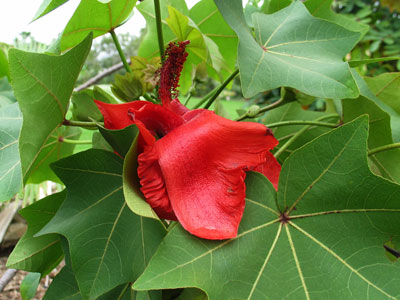
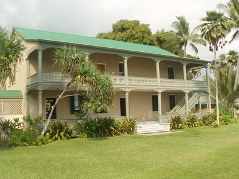
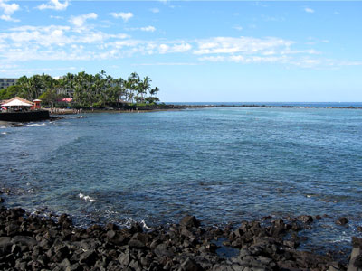
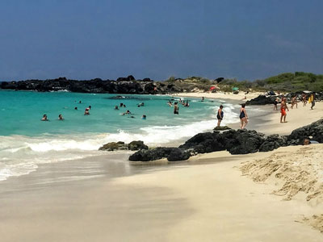
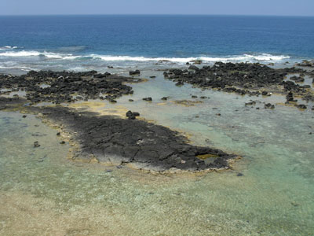
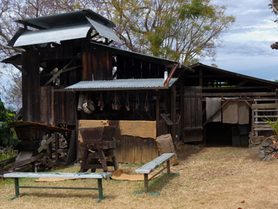
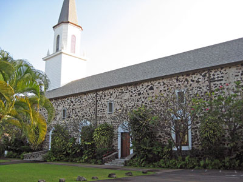

Kona Coast Travel Guide
Coastal region offering sunny weather, historic landmarks, marine sanctuaries, and world-renowned coffee farms amid volcanic landscapes.
Places to See in Kona Coast

Wasif Malik, CC BY 2.0, via Wikimedia Commons; Image Size Adjusted
.jpg){kind=link}
Amy B. H. Greenwell Ethnobotanical Garden
Fifteen-acre garden showcasing native and Polynesian-introduced plants arranged by ecological zone, with interpretive signage and cultural demonstrations.

Calbear22 at English Wikipedia, Public domain, via Wikimedia Commons; Image Size Adjusted

Hulihee Palace
Historic museum featuring royal Hawaiian artifacts, koa wood furnishings, and cultural exhibits from the monarchy era.

W Nowicki, CC BY 3.0, via Wikimedia Commons; Image Size Adjusted

Kahaluu Bay
Shallow reef-protected bay offering excellent snorkeling, sea turtle sightings, and cultural landmarks with easy beach access.

Skarz, CC BY-SA 4.0, via Wikimedia Commons; Image Size Adjusted

Kailua Kona
Seaside town known for its historic landmarks, oceanfront shopping and dining, sunny weather, and world-famous coffee farms.
Robert Linsdell from St. Andrews, Canada, CC BY 2.0, via Wikimedia Commons; Image Size Adjusted
_(23299175513).jpg){kind=link}
Kealakekua Bay
Marine life conservation district and historic landing site featuring coral reefs, spinner dolphins, and the Captain Cook Monument.

brewbooks from near Seattle, USA, CC BY-SA 2.0, via Wikimedia Commons; Image Size Adjusted
.jpg){kind=link}
Keauhou
Coastal destination known for snorkeling, cultural landmarks, and scenic oceanfront trails with access to primitive camping shelters.

Frank Schulenburg, CC BY-SA 3.0, via Wikimedia Commons; Image Size Adjusted

Kona Coffee Living History Farm
Outdoor museum where visitors explore a historic coffee farm with costumed interpreters demonstrating early 20th-century Hawaiian agricultural life.
Jeff P from Berkeley, CA, USA, CC BY 2.0, via Wikimedia Commons; Image Size Adjusted
.jpg){kind=link}
Kona
Coastal destination offering sunny weather, volcanic landscapes, marine wildlife, and access to historic parks and coffee farms.

W Nowicki, CC BY 3.0, via Wikimedia Commons; Image Size Adjusted

Mokuaikaua Church
Historic stone church built in the 1800s featuring lava rock architecture and artifacts from the earliest Christian missionaries in Hawai‘i.

RonPaul86, CC BY-SA 3.0, via Wikimedia Commons; Image Size Adjusted

Pu'uhonua o Hōnaunau National Historical Park
Sacred coastal sanctuary preserving ancient Hawaiian law, royal grounds, and cultural traditions within a lava rock landscape.
_86-400.jpg)
Gillfoto, CC BY-SA 3.0, via Wikimedia Commons; Image Size Adjusted
_86.jpg){kind=link}
St Benedicts Catholic Church
Historic hillside church adorned with vibrant frescoes painted by a Belgian priest to teach biblical stories to early Hawaiian converts.
How to Get There
Take a direct flight from Honolulu International Airport to Kona International Airport, then drive south on Queen Kaʻahumanu Highway (HI-19) to reach the coast.
Overview
The Kona Coast stretches across the western edge of the Island of Hawaiʻi, where sun-drenched shores meet a rich cultural legacy. This region is home to historic sites like Huliheʻe Palace and Puʻuhonua o Hōnaunau National Historical Park, offering glimpses into the lives of Hawaiian royalty and sacred traditions. Visitors can explore ancient fishponds and petroglyphs at Kaloko-Honokōhau National Historical Park, or snorkel in the crystal-clear waters of Kealakekua Bay, a marine sanctuary teeming with tropical fish and coral reefs. The coast’s calm seas are ideal for spotting dolphins, sea turtles, and even manta rays on guided night dives.
Beyond the shoreline, the upland slopes of Kona are blanketed with coffee farms producing the world-famous 100% Kona coffee. In the village of Hōlualoa, visitors can tour plantations, meet local artisans, and sample freshly roasted beans. The Kona Coast also hosts the annual International Billfish Tournament, drawing anglers from around the globe. Whether you're exploring lava rock beaches, hiking through dryland forests, or enjoying a sunset luau, the Kona Coast offers a vibrant blend of natural beauty, adventure, and cultural depth that captures the spirit of Hawaiʻi.
This article uses material from the Wikipedia articles and official tourism pages for the Kona Coast, which is released under the Creative Commons Attribution-Share-Alike License 3.0